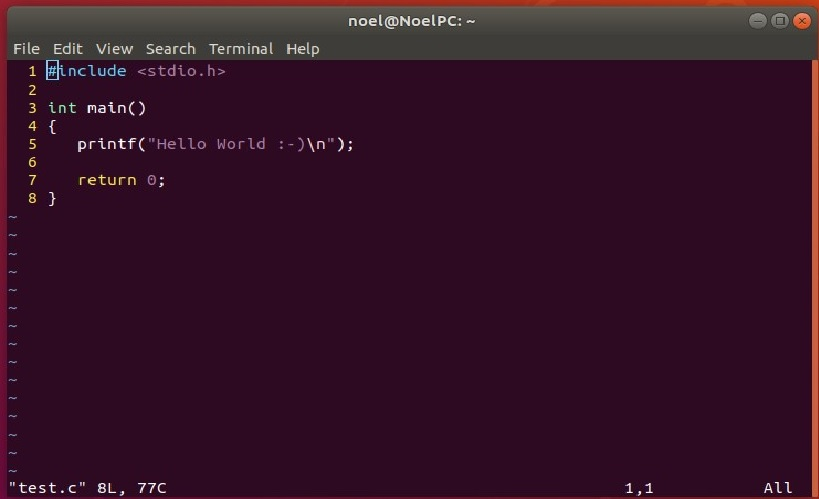
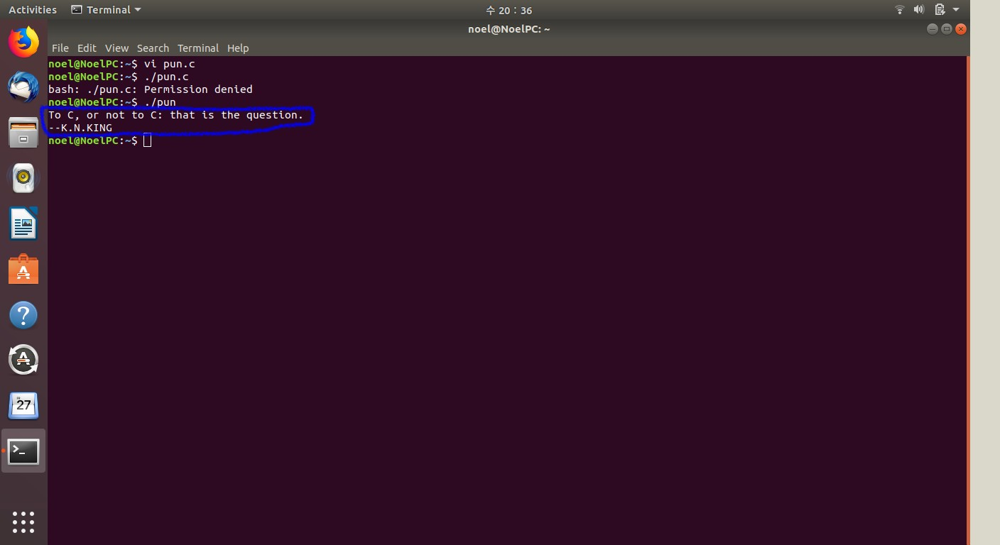

Go to Main page to check the list of other parts of C study.
The basic code names and the functions of C; functions for basic input/output, easy expressions and the words that are used in C.
To give a simple output of literal string, we use the function printf(). Here we have the basic structure of a C program.
The code has 'directive; standard input/output(#include
As shown in the above image, \n had used in printf() function and before seeing how it would be shown on the console, let's check out what it means for the blue words at the top of the code. Basically they are Comments that the programmers use not to make an output on the console but to make some notes within the codes for the understanding sakes. There are 2 types; // and /**/. If we write /*Hello*/ then the word Hello becomes just a comment that effects nothing to the code. It doesn't matter of the lines and spaces but the comment must begin with /* and closed by */ or else if we don't close the comment, C understands everything after /* as comments. // is a new tech of C99 that makes an end of a comment automatically after a line's written. // is good for a short one-lined comment.
This image clealy shows how \n works on the console screen.